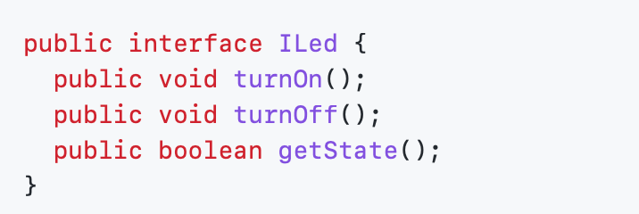
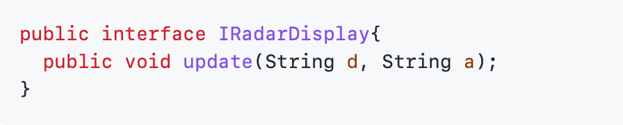
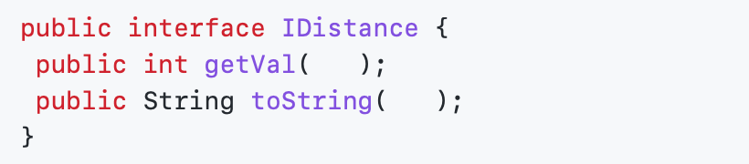
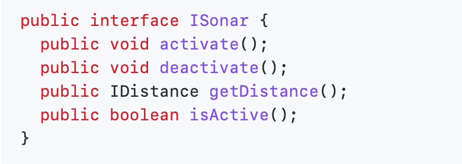
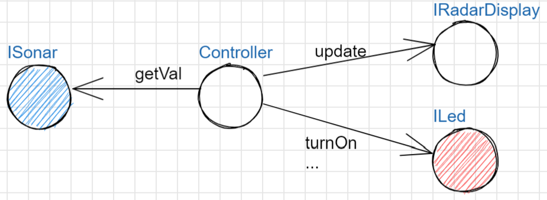

LABORATORIO DI INGEGNERIA DEI SISTEMI SOFTWARE
Introduction
Requirements
Requirement analysis
Problem analysis
Aspetti Rilevanti
- Si tratta di realizzare un sistema distribuito formato da quattro componenti:
- Il Sonar HC-SR04, di cui il committente fornisce il seguente software SonarAlone.c
- Il RadarDisplay, di cui è disponibile il POJO realizatto da radarPojo.jar
- Il Led, di cui il commitente fornisce codice di basso livello come Led25GpioturnOn.sh e Led25GpioTurnOff.sh
- Il Controller, che ha il compito di ricevere in ingresso i dati del sensore HC-SR04, elaborarli e inviare comandi al Led e dati al RadarDisplay
- L'interazione sonor-radar puo' avvenire in due modi:
- Comunicazione diretta
La figura rappresenta gli strati di software che permettono ai dati generati dal Sonar di essere ricevuti dal RadarDisplay

- Comunicazione mediata
Richiede la presenza di un componente mediatore, realizzato da terze parti come servizio disponibile

-
Per rendere comprensibile l'architettura alla 'macchina', introduciamo opportuni modelli dei componenti utilizzando un linguaggio di programmazione.
In particolare, nel caso di Java, è possibile utilizzare il costrutto interface per definire un componente catturando le funzionalità che esso deve offrire.
A consunto di ciò possiamo implementare le seguenti interfacce:
|
Led
|
RadarDisplay
|
|

|

|
|
Distance
|
Sonar
|
|

|

|
Architettura Logica
|
Un primo schema dell'architettura logica può essere definito come mostrato in figura, in cui il controller è posto al centro del sistema il quale chiederà al Sonar getVal. Il controller in funzione di getVal, attraverso update richiama RadarDisplay e attraverso turnOn il led sarà acceso.
|

|
Test plans
Project
Testing
Deployment
Maintenance
By Alessio Reitano email: alessio.reitano@studio.unibo.it